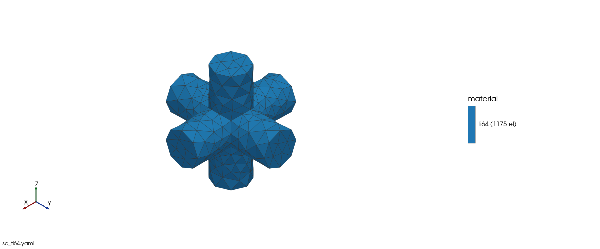
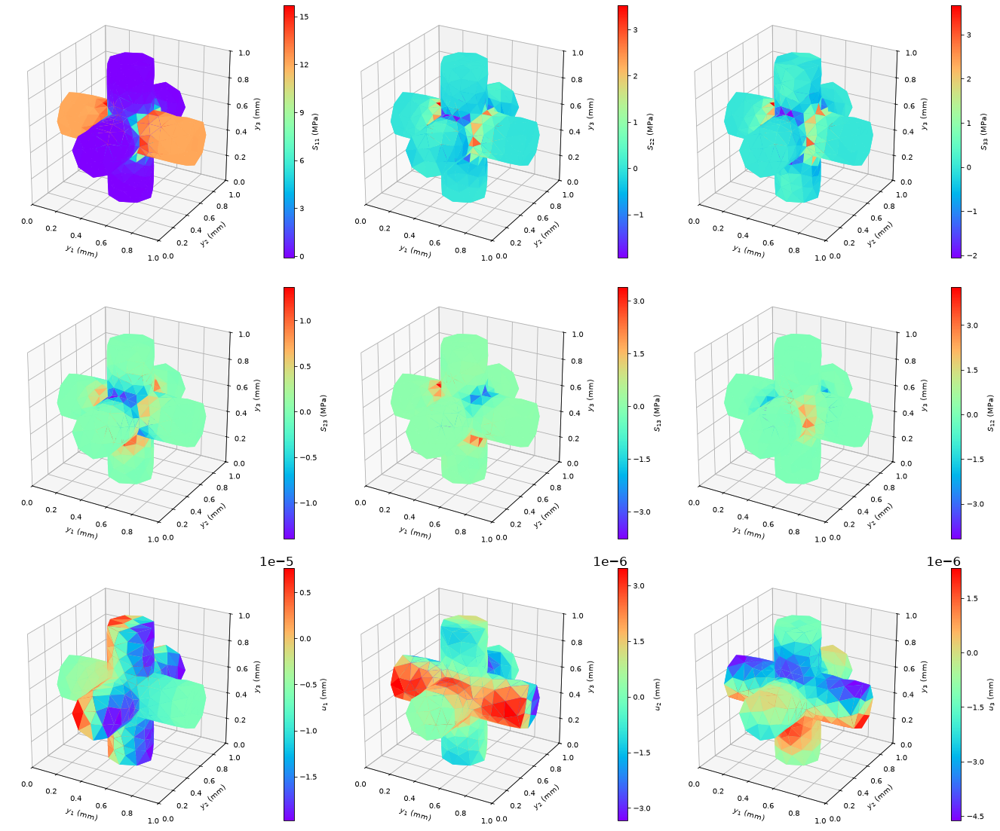
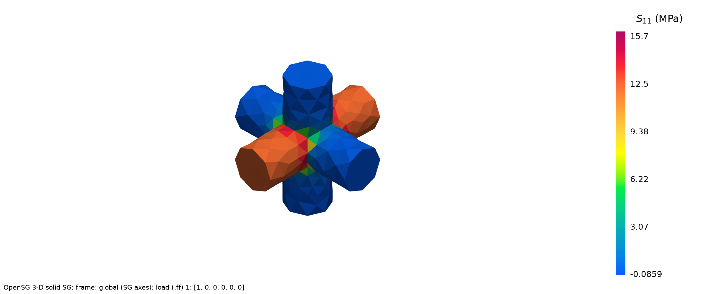
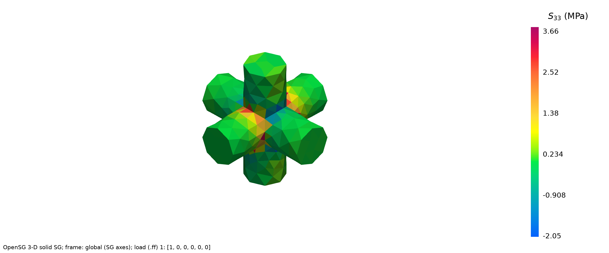
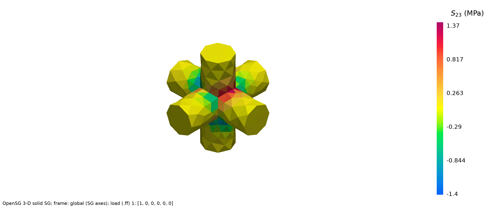
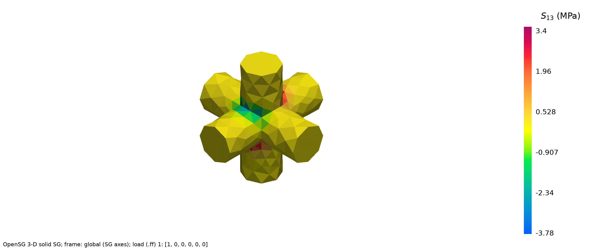
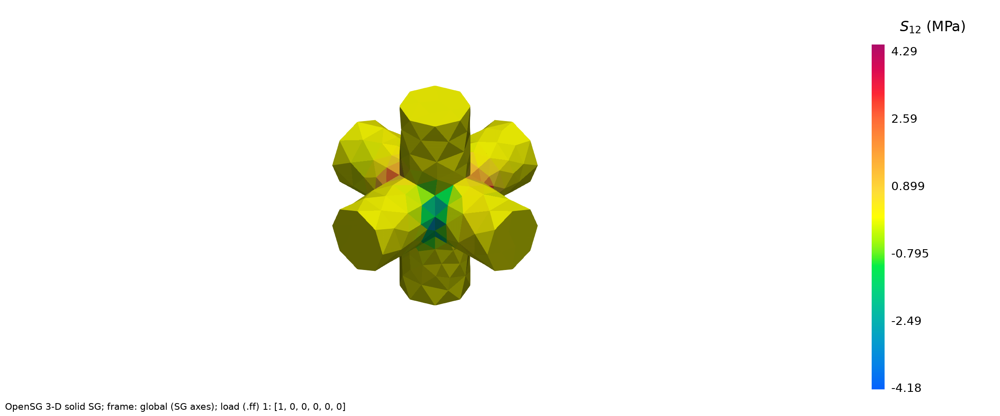
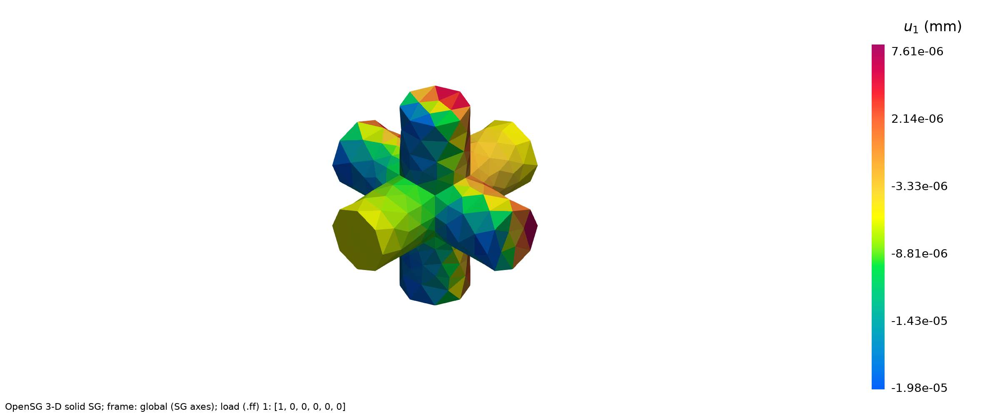
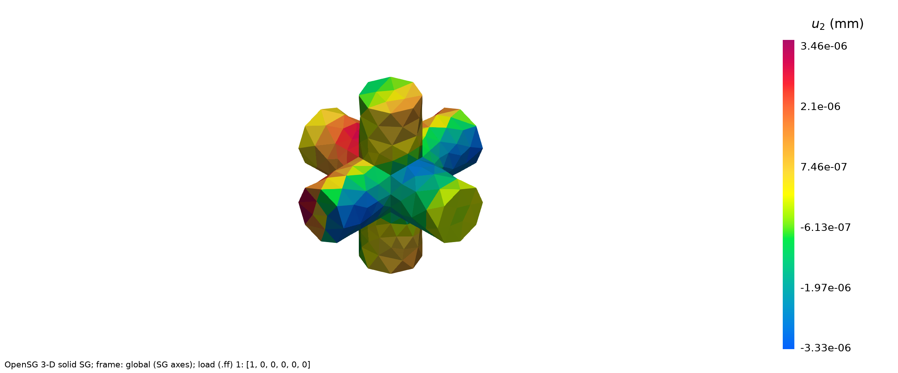
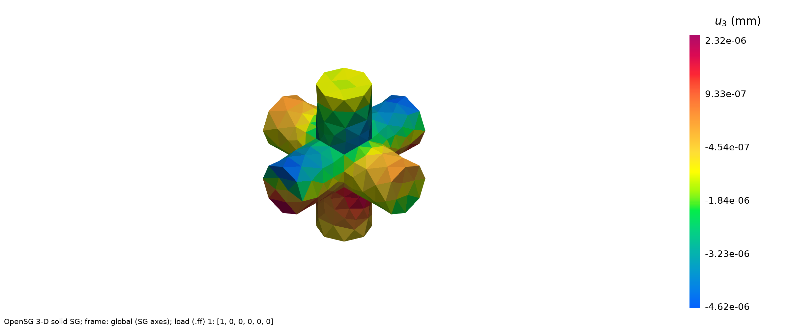

01 Simple cubic lattice#
Step 1: The lattice cell and its effective stiffness#
Prompt
Build a simple cubic strut lattice unit cell: cell size 1 mm, relative density 0.2, made of Ti-6Al-4V (E = 110 GPa, nu = 0.31, density 4430 kg/m³), in N-mm-MPa units with the default mesh. Homogenize it with OpenSG as an effective 3-D solid: show the mesh picture, the 6×6 stiffness matrix, its compliance and the nine engineering constants.
CompositesAI


Simple-cubic Ti-6Al-4V lattice mesh#
Completed OpenSG homogenization for the Ti‑6Al‑4V simple-cubic lattice. The mesh is shown above.
Cell: 1 × 1 × 1 mm³; target relative density 0.2000, meshed 0.19996
Strut radius: 0.16235 mm
Effective density: 885.8 kg/m³
Mesh: 1,175 quadratic tetrahedra, 2,289 nodes
Checks: periodic pairing passed; stiffness symmetric and positive definite.
Effective stiffness C (MPa; Voigt order 11, 22, 33, 23, 13, 12):
Compliance S (MPa⁻¹):
Engineering constants
Constant |
Value |
|---|---|
E₁, E₂, E₃ |
10,105.6; 10,104.3; 10,107.8 MPa |
G₁₂, G₁₃, G₂₃ |
605.5; 607.2; 606.0 MPa |
ν₁₂, ν₁₃, ν₂₃ |
0.08792; 0.08822; 0.08780 |
The response is cubic to within 0.040% across equivalent stiffness terms. Full tables and machine-readable data are attached.
Effective stiffness and compliance tables
Effective-property data
Step 2: Local stresses and displacements under a uniaxial stress#
Prompt
Dehomogenize the cell under a macro uniaxial stress S11 = 1 MPa along x1, with all other macro stresses zero. Show the six local stress components and the three displacements as contour plots with a rainbow colorbar.
CompositesAI


Local stress and displacement contours#


S11 local stress contour#

S22 local stress contour#


S33 local stress contour#


S23 local stress contour#


S13 local stress contour#


S12 local stress contour#


U1 displacement contour#


U2 displacement contour#


U3 displacement contour#
Rainbow contours for \(S_{11}=1\) MPa are shown in sc_ti64_rainbow_sheet.png, with all nine component plots attached individually.
Stress plots: \(S_{11}, S_{22}, S_{33}, S_{23}, S_{13}, S_{12}\) in MPa
Displacement plots: \(u_1, u_2, u_3\) in mm
All fields are expressed in the global cell axes.